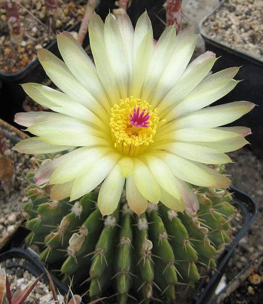

Бегонии декоративнолистные / Begonia
Бегония - это цветок удивительной красоты. Растение может стать достойным украшением и сада, и подоконника. Большое преимущество в том, что бегония не только неприхотлива и прекрасно приживается в комнатных условиях, но и представлена сотнями видов, поэтому каждый сможет подобрать для себя наиболее приглянувшийся цветок. Бегония принадлежит к семейству Бегониевых, которое включает более 1000 видов и 2000 гибридов. Родиной растения являются тропические и субтропические зоны Юго-Восточной Азии (Индия, Тибет, Шри-Ланка), Юг и Юго-Запад Африки (включая остров Мадагаскар). Причем чаще всего вид встречается в горной местности (на высоте примерно 3500-4000 метров над уровнем океана), но также может произрастать во влажных лесах. Межскальные породы и корневища старых деревьев - также излюбленные места культуры. Бегония уже давно известна, изучена и успела прижиться в Европе и Америке, однако именно в Африке произрастает самый большой процент данной культуры в мире. Размер бегоний варьируется от 5-10 сантиметров до 2-3 метров. Классификаций вида также существует немало, но растениеводы вывели несколько категорий, которые наиболее часто встречаются в домашних условиях. Это декоративно-цветущие комнатные, декоративно-лиственные комнатные и декоративно-цветущие горшечные бегонии. Среди перечисленных встречаются и вечнозеленые, и многолетние виды, и стелющиеся, и высокие цветы-однолетники, но всех их объединяет яркая листва и пышное цветение.

Гиацинты восточные / Hyacinthus orientalis
Гиацинт (Hyacinthus) — красивое луковичное растение из семейства Спаржевые (Asparagaceae), цветущее весной. С древнегреческого языка название переводится как «цветок дождей», поскольку распускается гиацинт с первыми весенними дождями. Но греки так же называли его «цветком печали» и связывали этот цветок с Апполоном и убийством юного сына царя Спарты. Родиной этого изящного растения считается Средиземноморье и юго-восточная Азия. Цветущий стебель гиацинта может быть как низкорослым, так и достаточно высоким. Из розетки листьев выходит сочный цветонос с многочисленными цветочками, которые напоминают колокольчики и собраны в кистевидное соцветие. Цветы представлены самыми неожиданными оттенками. Листья гладкие, мясистые, ярко-зеленые.

Алоказии крупнокорневые (лат. alocasia macrorrhiza)
Тропическую гостью при дворе императрицы ботаники именовали по-латыни – Alocasia macrorrhizos, что значит Алоказия крупнокорневая (крупнокорневищная). Сегодня ее еще зовут армой, т.к. этот травянистый многолетник относится к семейству Ароидных. В народе же эту разновидность Алоказии метко прозвали «слоновьим ухом» – за листья с гладкими краями. А еще – плакальщицей или погодником, ведь Алоказия – живой барометр, синоптикам с ней не сравниться.

Ванды / Vanda
ВАНДА (Vanda) - моноподиальные орхидеи-эпифиты рода, включающие 25 видов растений, но есть литофиты. Крупные небесно-голубые цветы орхидеи Ванды любых видов всегда редки и замечательны, поэтому они просто обязаны вызвать наш интерес. Встречаются растения от северо-Восточной Индии до Южного Китая и Таиланда, их цветки диаметром 8-10 сантиметров разнообразных оттенков голубого, красно-фиолетового с более темными мозаичными отметинами. Род "Vanda" было названо в 1795 году сэром Уильямом Джoнсом (Sir William Jones ). В своем дневнике, который был опубликован позже под названием "Азиатские исследования" (Asiatic Researches), где он впервые использовал данное имя (говорят, что это ванда шахматная), заимствованное из санскрита (Индия), а также обозначающий разновидность орхидеи произрастающего на северо-востоке Индии (Бенгалия).
Бифренарии / Bifrenaria
Род орхидей Бифренария состоит из 24 видов орхидей, встречающихся, как и орхидея вида Ангрекум, в равнинных дождевых тропических лесах Южной Америки. Как правило, — это небольшие растения, представляющие собой четырехгранные оливково-зеленые псевдобульбы, имеющие на вершине один или два ланцетовидных листа.
Каладиумы / Caladium
Декоративно-лиственное домашнее растение каладиум (Caladium) является частью семейства Ароидные. В природных условиях это растение можно повстречать в тропических широтах Индии и Южной Америки. Оно очень популярно среди цветоводов благодаря своим эффектным зеленоватым листовым пластинам, которые украшены разнообразными пятнышками, разводами и узорами контрастного оттенка. Благодаря оригинальной форме и окрасу листовых пластин в народе растение еще называют «Сердцем Христа», «Крыльями Ангела», и «Слоновьими ушами».
Колумнеи / Columnea
Колумнея относится к семейству геснериевых. Это оригинальное ампельное растение со свисающими длинными побегами; листья у колумнеи меленькие, частично кожистые, или мягкие и опушенные ворсинками. Невероятно нарядны и декоративны ее трубчатые цветки ярко-красного или желтовато-красного цвета. Цветет колумнея долго летом и зимой. Очень привлекательно выглядит в квартире и офисе.

Кротоны / Codiaeum
Кротон (Croton), еще именуемый «плащом Иосифа», либо кодиеумом (Codiaeum), является представителем семейства Молочайные. Наибольшей популярностью у цветоводов пользуется не научное название кодиеум, в переводе с греческого означающее «голова», а кротон при этом, что означает это слово, никто не знает точно. Есть мнение, что это название происходит от наименования города, расположенного в южной Италии, в нем Пифагор в свое время основал собственную школу, а может на одном из наречий данное слово переводится, как «кустарник»… Это растение родом с островов Тихого океана и Северной Австралии, а еще из Юго-Восточной Азии и Индии. По информации, взятой из различных источников, данный род объединяет от 17 до 1200 видов, однако в домашних условиях выращивают лишь кротон пестрый, а также его гибриды. Такой цветок является наиболее красивым из всех декоративно-лиственных домашних растений, он способен стать главным украшением любой комнаты, при этом благодаря своей компактности, он не занимает много места. В части стран такой домашний цветок является хранителем домашнего очага, при этом он защищает жилище от плохой энергетики.
Мединиллы великолепные / Medinilla magnifica
Мединилла — вечнозеленая тропическая красавица из филиппинских лесов. Очаровательные, но достаточно капризные растения подойдут для любителей экзотики, готовых приложить усилия, чтобы яркий кустарник раскрылся во всей своей красе. Мединилла относится к семейству Меластомовые. Кустарники и небольшие деревья известны крупными темно-зелеными листьями, под которыми раскрываются поникающие грациозные соцветия, похожие на разноцветные виноградные грозди.

Кактус пародия/Parodia
Кактус пародия (Parodia), который еще именуют эриокактус, имеет прямое отношение к семейству кактусовые (Cactaceae). Данный род объединяет 50 видов различных кактусов. В природе их можно повстречать в Уругвае, Центральной и Южной Боливии, Парагвае и Северной Аргентине. У всех данных видов имеется короткий стебель в форме цилиндра либо шара, на котором располагаются хорошо различимые спиральные ребра. На них имеются не очень высокие бугорки с ареолами, обладающими густым опушением. Из каждой ареолы выходит от 1 до 5 центральных колючек, в длину достигающих 4 сантиметров, при этом бывает, что одна из них имеет загнутый крючком кончик, а также 10–40 коротеньких колючек ― в длину достигающих 0,5–1,5 сантиметров.
Якобинии мясо-красные/ Jacobinia
Якобиния идеально подходит для выращивания в помещении. Её аккуратные зеленые кустики усеяны необычными цветами. Они не требуют особой заботы и всегда радуют опрятным внешним видом. На фото якобиния поражает густой зеленой копной листьев. Люди, которые верят в энергетику растений, утверждают, что якобиния способствует развитию интуиции, отзывчивости, взаимопонимания и поддерживает гармонию в семье. Якобиния – вечнозеленый многолетник из семейства Акантовые. Она распространена в тропических лесах Южной и Центральной Америки. Известно и другое название этого милого растения – юстиция или джустиция. Представители якобинии принимают травянистую или полукустарниковую форму.
Юкки / Yucca
Юкка слонова або Yucca elephantipes - вид юк придатний для утримання в офісі або вирощування у квартирі. Юка (лат. Yucca) - рід деревовидних вічнозелених рослин з сімейства агавових (Agavaceae). Юка родом з вологих субтропіків Північної Америки. Налічується понад сорок видів рослини юка, з них близько десятка виростає в нашій місцевості. У південних країнах Європи, де достатньо сонячного світла і тепла, рослина відмінно приживається у відкритому грунті. У країнах з мінливими, більш суворими погодними умовами, з підвищеною вологістю повітря, ця пальма вирощуэться як кімнатна квітка. Кущовидна рослина має дерев'янистий стовбур, листя жорсткі, досить довгі: від тридцяти сантиметрів до одного метра, загострені та зібрані біля основи в розетку. Забарвлення листя найчастіше яскраво-зелена, у деяких видів спостерігається неоднорідність кольору, проглядаються світлі смуги. Це велика кімнатна рослина, що на вигляд нагадує пальму, підходить для просторих приміщень. Юка відмінно виглядає як на самоті, так і в компанії з іншими квітами.
Агавы / Agave
В род Агава (Agave) входит более 300 листовых суккулентов с большими прямостоячими соцветиями - колосьями или метелками. Мясистые зеленовато-белые или зеленовато-красные цветки имеют трубчатую или колокольчатую форму. Листья собраны в базальные розетки у основания стебля - короткого или довольно длинного (до 3 м). Часто по краю и на концах листьев имеются колючки. Наиболее известна агава американская (Agave americana) - высотой и диаметром - до 3 м - и ее формы и сорта 'Каемчатая', 'Полосатая', 'Среднерасписная' (у последней в центральной части листа - белая или желтая полоса). Существует и еще ряд достаточно распространенных видов. Агава утонченная (A. attenuate) - растение высотой до 1,5 м с сизыми листьями и желтыми соцветиями.
Бальзамины / Impatiens
Бальзамин (лат. Impatiens) – вид однолетних или многолетних травянистых, растений семейства Бальзаминовых (Balsaminaceae). Родиной бальзамина являются тропики и субторопики Азии и Африки, остров Занзибар, Восточная Африка, отдельные виды встречаются в Средней Азии. В Европу бальзамин был завезен в 1596 году и с тех пор стал одним из популярнейших комнатных растений. Бальзамин – долгоцветущее растение, с прямостоячими стеблями, достигающими в высоту 50 см. Стебли сочные, гладкие, ветвистые. Листья достигают в длину 8-12 см, имеют ланцетовидную или овальную форму, зубчатые по краям, мясистые, зеленые или пурпурно-бронзовые. Цветки располагаются в пазухах листьев, розового и красного цвета.

Гиппеаструмы / Hippeastrum
Гиппеаструм (Hippeastrum) является представителем семейства Амариллисовые. Данный род объединяет примерно 90 видов. В состав названия такого растения входит 2 корня греческого языка, которые переводятся как «всадник» и «звезда». Очень часто неопытные цветоводы принимают данное растение за амариллис. Однако нужно помнить, что гиппеаструм в природе встречается в субтропических и тропических областях Америки (в том числе в бассейне Амазонки), а амариллис прекрасный (представляющий монотипный род) можно повстречать в южной части Африки. Эти два растения являются родственными между собой, они считаются представителями одного семейства, но выделены в различные роды. На территорию Европы такой цветок попал в 16 веке, при этом первый его гибрид появился уже в 1799 г, а назван он был гиппеаструм Джонсона.